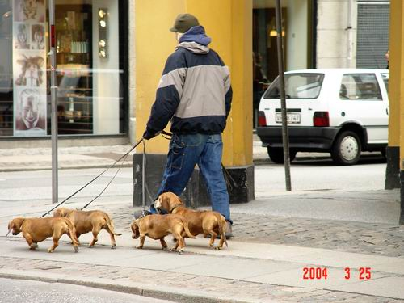
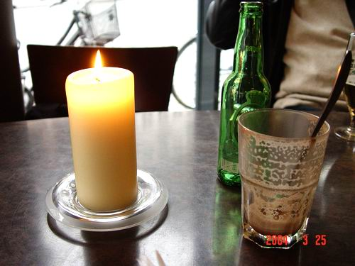
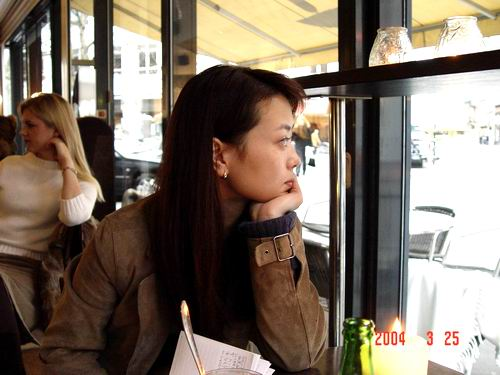

写完意大利的游记之后，突然缺乏热情继续写最后一站哥本哈根。总有心事未了之感，所以还是得写完它。
在米兰购买了两张前往丹麦哥本哈根的机票，RMB4800一张，是我们所持联票价格的一半还多。联票包括：上海—法兰克福—巴黎，哥本哈根—法兰克福—上海，每张联票价格为RMB9000。在米兰机场办理了登记手续，发现乘客清一色是穿着厚实的西方人面孔，到丹麦的外国人果然很少。MD-87航空飞机，据说此型号飞机出事率相对比较高一些，飞机不是很大，两排座位，缺乏安全感。
 —哥本哈根机场
—哥本哈根机场
出了哥本哈根机场，仿佛掉进冰窟窿里似的，特别冷。叫了辆出租车到朋友帮忙预订的STRAND酒店，司机是个黑人，一路上播放着有关中国的英语新闻，当时还暗地里赞叹司机细心。到了酒店，我们掏出朋友给我们的200丹麦克郎，本打算再付几个欧元支付车费，结果司机说要么都用丹麦克郎，要么都用欧元。他希望我们用欧元支付，这样他可以从中赚些差价，结果我们掏出最后一张一百元丹麦克郎，这多少令他感到意外，他一定以为我们没有丹麦克郎了。事实上，这300元丹麦克郎还是出国前朋友给的，想着我们刚到丹麦一定没时间换MONEY，给些零用钱备急。下车后，那个黑人司机再无我们上车时的热情，连行李都让我们自己从车上拿下来。这个势利的男人，呵呵~~


~~-我们居住在海港附近的STRAND酒店~~


哥本哈根 (Copenhagen, Koebenhavn) 是北欧最大的城市，原意为“商人港口”，有自由港和航空港，是世界交通的枢纽。由于统治欧洲时间最久的皇族玛格丽特女皇二世皇族居住于此，因此，它还有一个别称-“女皇之城”。据出租汽车司机介绍哥本哈根人口150万。这个城市因丰富的艺术与文化本质而在1996年被评为欧洲文化之都。丹麦是世界上社会福利最好的国家之一，国民获得国家多项福利，丹麦人的平均寿命很长。听当地人介绍，如果丹麦人这个月失业了，那么政府将支付其上个月薪水的80%，直到其找到工作为止。当地年轻人每月收入USD5000还嫌薪水低。在丹麦退休金，上至首相，下至平民百姓，街头店员它的退休金一律是平等的。
早期丹麦政府的移民政策尚算宽松，一些中东、印度、巴基斯坦人移民到丹麦，每生一个孩子丹麦政府就补贴若干美圆，后来报纸上报道一个非洲母亲生了7、8个孩子，每年光是拿补贴就能拿到20万美圆左右，然后她把这些钱寄回故乡，在当地也是富裕的家庭了。这件事情被报道后，使得丹麦民众异常气愤，移民政策随之严格起来。3月25日晚上在一家巴基斯坦餐厅用餐，价格异常便宜，但是我很不习惯那种口味。餐厅的主人也是早期移民过来的外国人。丹麦人对中国人的印象相对还行。
—知道那天有多冷吗？我穿上了几乎所有挡风保暖的衣服，即使戴着手套手指也冻的疼。美人鱼铜像。
丹麦的国鸟是白天鹅，过去却是丹麦鹤。丹麦人视此鸟为仙鸟，说婴儿便是由它们衔到人间的。不知从何时起，也不知何故，丹麦鹤的数量骤然减少了。现在，日德兰半岛有个小城市，是丹麦鹤唯一出入的地方。每年春暖花开时节，城里居民都要在自家的房顶上修搭木架，以方便仙鸟筑巢孵蛋。当仙鸟归来时，全国各地有不少人专程赶去，和当地居民一起，像对凯旋的勇士一样加以欢迎。丹麦的交通信号灯一般要比其他国家多两个装置，一是专管公共汽车的横竖道信号灯；二是专管自行车的小型红绿灯。按照交通规则，在路口，公共汽车和自行车享有先行权，其他车辆必须礼让，否则就是违反交通规则。据２００１年的统计，丹麦家庭上网过半。在丹麦，狗要纳税，但离奇的是税的多少取决于狗的高矮。所以，在丹麦，狗都是长长的，矮矮的。

在丹麦，琥珀是最美的东西。在南京金鹰购物中心有家专柜出售的琥珀和我在丹麦看见的那些琥珀差不多，但款式明显不如丹麦多。作为琥珀的发祥地，丹麦人开辟了世界历史上有名的琥珀贸易之路，丹麦人骄傲地称之为“琥珀之路”。据丹麦琥珀屋的资料记载，“琥珀之路”从丹麦北部的日德兰半岛，经由波罗的海口岸，可一直到达地中海、波斯、印度、中国和更远的地方。据说古代西方人向中国皇帝赠送的礼品就是琥珀。

丹麦是人均使用蜡烛最多的国家，夜幕降临，当你在丹麦的小巷里徜徉，你会发现，一幢幢别墅、公寓的窗台上烛光点点。透过窗户（丹麦人一般不挡窗帘），你会欣赏到男女主人对饮咖啡，窃窃私语的情景。丹麦蜡烛色彩斑斓，千姿百态，并有三个特点：一是不流泪，再富想像力的文人在丹麦也写不出“蜡烛有心还惜别，替人垂泪到天明”的诗句；二是不冒烟，人们在烛光下不会有烟薰火燎的感觉；三是可燃时间长，每一种蜡烛上都标有可燃时间。丹麦人引以为豪的是丹麦人均蜡烛销量居世界第一，其含义不仅仅是蜡烛给丹麦漫长的冬夜带来了光明，它体现的更多是一种生活情调、一种心理素质、一种人生境界。


—在哥本哈根的咖啡馆里丹麦人确实有一部分受气候影响得了抑郁症，有什么办法来缓和呢？就是在各个社区或者健身房都设有专门的仿照太阳光谱的仪器，像个汉堡包似的，人就躺进去，每天躺在里面晒几个小时。由于冬天特别漫长，北欧人也想出一些办法改变这种现状，一个是北欧所有的房子都窗户特别多，而且都特别醒目，可以更多的吸收自然光，第二个就是家里特别注重蜡烛，不管什么场合都要点上一根蜡烛，摆上鲜花，尽量创造温馨的环境，在这个温馨的环境里感觉可能好一点。
No Responses to “女皇之城（一）”
Leave A Reply
存档只读，评论已关闭。